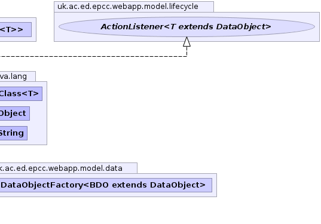

T - type of targetpublic class ActionList<T extends DataObject> extends AbstractConstructedTargetList<T,ActionListener<T>> implements ActionListener<T>
LinkedList of AbstractActions that is populated
from configuration parameters.
The aim is to remove unnecessary code dependencies
This looks in the parameter tag.list-name where
tag is the configuration tag for the parent factory.
This value is interpreted as a comma separated list of class tags and used to create the
listeners. The target classes for the listeners and the factory are checked for type conflicts.|  |
| Constructor and Description |
|---|
ActionList(DataObjectFactory<T> factory,
java.lang.String list_name) |
| Modifier and Type | Method and Description |
|---|---|
void |
action(T target)
Called after the event has taken place (and any external actions have completed) to allow the
LifeCycleListener to
make/finalise corresponding changes to its own objects. |
boolean |
allow(T target,
boolean throw_reason)
Does the
ActionListener want to allow the event to take place. |
protected java.lang.Class<? super ActionListener> |
getTemplate() |
java.lang.Object |
getWarning(T target)
Get an optional object (usually a String or other object that can be added to display content) that should be presented to
the user as warning before performing the operation.
|
getContext, getLogger, getTargetadd, add, addAll, addAll, addFirst, addLast, clear, clone, contains, descendingIterator, element, get, getFirst, getLast, indexOf, lastIndexOf, listIterator, offer, offerFirst, offerLast, peek, peekFirst, peekLast, poll, pollFirst, pollLast, pop, push, remove, remove, remove, removeFirst, removeFirstOccurrence, removeLast, removeLastOccurrence, set, size, spliterator, toArray, toArrayequals, hashCode, listIterator, removeRange, subListcontainsAll, isEmpty, removeAll, retainAll, toStringfinalize, getClass, notify, notifyAll, wait, wait, waitpublic ActionList(DataObjectFactory<T> factory, java.lang.String list_name)
protected java.lang.Class<? super ActionListener> getTemplate()
getTemplate in class AbstractConstructedTargetList<T extends DataObject,ActionListener<T extends DataObject>>public boolean allow(T target, boolean throw_reason) throws LifeCycleException
ActionListenerActionListener want to allow the event to take place. This is to give the
listener a chance to veto the event when it knows in advance its not capable of supporting the operation in its current state.
For example veto project setup because there are no machines configured.allow in interface ActionListener<T extends DataObject>target - object.throw_reason - set to true to throw exception instead of returning boolean.LifeCycleExceptionpublic void action(T target)
ActionListenerLifeCycleListener to
make/finalise corresponding changes to its own objects.action in interface ActionListener<T extends DataObject>public java.lang.Object getWarning(T target)
ActionListenerActionListeners returning a non-null valuegetWarning in interface ActionListener<T extends DataObject>